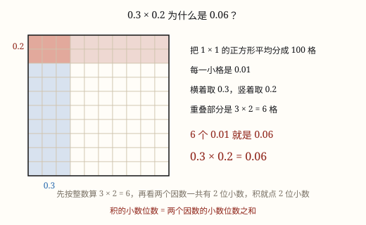

小数乘法的算理
先把小数当成整数相乘，再按两个因数小数位数的和点上小数点——背后的道理是 0.1 × 0.1 = 0.01。
| 所属主题 | 数的运算 |
|---|---|
| 所属模块 | 数与代数 |
| 课标学段 | 第三学段（5~6年级） |
| 前置知识 | 认识小数、小数的意义和性质、三位数乘两位数 |
| 核心素养 | 运算能力数感推理意识 |
教材定位
人民教育出版社《2024年版》
对应五上第 2 单元「小数乘法」：小数乘整数、小数乘小数与积的近似数。
课标要求
| 数与代数·数与运算 | 能进行简单的小数、分数四则运算和混合运算，感悟运算的一致性，发展运算能力和推理意识。 印刷第 24 页 行为动词：掌握 |
|---|---|
| 数与代数·数与运算 | 结合具体情境探索并理解小数和分数的意义，感悟计数单位；会进行小数、分数的转化，进一步发展数感和符号意识。 印刷第 23 页 行为动词：理解 |
说明
周末去超市买西红柿，每千克 3.6 元，你挑了 1.2 千克。要付多少钱，算式是 3.6 × 1.2。两个因数都是小数，可我们只会整数乘法，怎么办？先把它们都当成整数：36 × 12 = 432。再数一数，两个因数一共有两位小数，就从 432 的右边起数出两位点上小数点，得 4.32。所以付 4.32 元。
为什么可以这样算？因为 3.6 = 36 ÷ 10，1.2 = 12 ÷ 10。那么 3.6 × 1.2 = 36 × 12 ÷ 10 ÷ 10 = 432 ÷ 100 = 4.32。把两个因数各乘 10 变成整数，积就被乘了 10 × 10 = 100，所以算完必须把积除以 100，小数点往左移两位。两个因数各缩小 10 倍，积就缩小 100 倍。
最短的那句话是：小数乘法，先按整数乘法算，再看两个因数一共有几位小数，就从积的右边起数出几位点上小数点。一位小数乘一位小数，积是两位小数；一位小数乘两位小数，积是三位小数——位数是相加的，不是取多的那一个。
最能说明问题的是最小的一块砖：0.1 × 0.1 = 0.01。0.1 的计数单位是十分之一，两个十分之一相乘，得到的计数单位是百分之一。所以两个 0.1 乘起来不是 0.1，而是 0.01——积的计数单位比两个因数都小一级。
还有一条很好用的推论：一个数（0 除外）乘大于 1 的数，积比原数大；乘小于 1 的数，积比原数小；乘 1，积和原数相等。比如 3.6 × 1.2 = 4.32 比 3.6 大，3.6 × 0.8 = 2.88 比 3.6 小。所以「乘法一定越乘越大」这句话是错的。
使用场景
买菜称重算总价：每千克 3.6 元的西红柿买 1.2 千克，单价和数量都是小数，一次小数乘法就把钱算清了。
手机流量套餐：每 GB 流量 3.5 元，这个月用了 1.6 GB，账单上的钱就是 3.5 × 1.6。
打车与地铁计费：每千米 2.4 元，坐了 8.5 千米，车费也要用小数乘法算。
教室铺地板、买涂料：教室长 8.4 米、宽 6.5 米，先算面积，再乘每平方米的价钱，两次都会碰到小数。
量一量再算：一张纸厚 0.09 毫米，500 张叠起来多厚，就是小数乘整数。
注意点
位数是相加，不是取多的那个。0.25 × 0.4 是两位加一位，积要有三位小数，应得 0.100，化简成 0.1；只点一位变成 1.0，答案一下就大了 10 倍。
位数不够要在前面补 0。0.02 × 0.03：2 × 3 = 6，可积要有四位小数，6 前面得补三个 0，写成 0.0006，不是 0.6。
先点小数点，再划末尾的 0。0.25 × 4 = 1.00，点完小数点才发现末尾有两个 0，可以划成 1；要是先划 0 再点，位数就不够了。
列竖式是末位对齐，不是小数点对齐。小数点对齐是小加减法的规矩；乘法只对着末位算，最后再点小数点。
单位先统一。3.6 元一千克、买 800 克，要先把 800 克化成 0.8 千克再乘，别拿克去乘元。

图 1：0.3×0.2 就是 100 格里的 6 格
为什么是这样
算理推导
先攻最小的那块砖：0.1 × 0.1 是多少？0.1 是「把一个整体平均分成 10 份取 1 份」，再取这 1 份的十分之一，就是把整体平均分成 100 份取 1 份，也就是 0.01。两个一位小数相乘得两位小数，根子在这里。
再看 3.6 × 1.2。把 3.6 乘 10 变成 36，积跟着乘 10；把 1.2 乘 10 变成 12，积又乘 10。36 × 12 = 432，这个 432 是真正答案的 10 × 10 = 100 倍。
要回到真正的答案，就把 432 除以 100，小数点向左移两位，得 4.32。所以「数两位小数、点小数点」不是背来的口诀，它做的就是把多乘的 100 还回去。
把这件事说成通用的话：一个因数有几位小数，就相当于它被除了几个 10；两个因数合起来除了几个 10，积就要补回几位小数。位数相加，本质是「除了几次 10」相加。
为什么乘小于 1 的数会变小？3.6 × 0.8 求的是 3.6 的十分之八，只要 3.6 的一部分，当然比 3.6 小；3.6 × 1.2 是 3.6 再加上它的十分之二，当然比 3.6 大。
动手实验
在一张 10×10 的方格纸上，把整张纸看成 1，每一小格就是 0.1 × 0.1 = 0.01。用彩笔涂出 0.3 × 0.4：横着 3 格、竖着 4 格，正好 12 个小格，就是 0.12。再涂 0.1 × 0.1，只有 1 格，是 0.01。最后用竖式算一遍 3.6 × 1.2，看小数点是不是落在 4.32 的位置上——图、式、答案三样对得上，这个知识点才算真的懂了。
按场景的例题
例 1（场景：购物消费） 超市生鲜区称西红柿
西红柿每千克 3.6 元，妈妈挑了 1.2 千克。要付多少元？
解：先按整数乘：36 × 12 = 432。两个因数一共两位小数，从 432 右边起数两位点上小数点，得 4.32。
答：付 4.32 元。
例 2（场景：行程出行） 打车软件的里程费
打车每千米 2.4 元，从学校到家行驶了 8.5 千米。车费是多少元？
解：24 × 85 = 2040，一位加一位是两位小数，积为 20.40，末尾的 0 划掉。
答：车费 20.4 元。
例 3（场景：工程建造） 给教室铺木地板
教室地面长 8.4 米、宽 6.5 米。每平方米地板 45.5 元，铺满这间教室要多少元？
解：先算面积：8.4 × 6.5 = 54.6 平方米（84 × 65 = 5460，两位小数）。再算钱：54.6 × 45.5 = 2484.3 元（546 × 455 = 248430，两位小数）。
答：面积 54.6 平方米，一共 2484.3 元。
例 4（场景：计量与估算） 一包打印纸有多厚
一包 A4 纸有 500 张，每张厚约 0.09 毫米。这包纸叠起来大约多厚？
解：9 × 500 = 4500，两位小数得 45.00，末尾两个 0 划掉，是 45。
答：大约 45 毫米，也就是 4.5 厘米。
常用推论
积的小数位数等于两个因数小数位数的和：一位乘两位，积就是三位小数（末尾的 0 可以划掉）。
积不变的规律：一个因数乘几，另一个因数除以相同的数（0 除外），积不变。所以 3.6 × 1.2 也可以改成 36 × 0.12 来算。
一个数（0 除外）乘大于 1 的数，积比原数大；乘小于 1 的数，积比原数小；乘 1，积与原数相等。
总价 = 单价 × 数量，单价和数量都可以是小数；算出总价后按「元」写到分，通常保留两位小数。
易错点
错0.25 × 0.4 算成 1.0。
为什么错只数了一位小数。两位乘一位应该是三位小数，25 × 4 = 100 要写成 0.100，1.0 比正确答案大了 10 倍。
正确0.25 × 0.4 = 0.100 = 0.1。
错0.02 × 0.03 算成 0.6。
为什么错位数不够却没有补 0。两位加两位是四位小数，2 × 3 = 6 前面还差三个 0。
正确0.02 × 0.03 = 0.0006。
错1.2 × 0.03 列竖式时把小数点对齐，算成 0.36。
为什么错把加减法的规矩搬到乘法上了。乘法只看末位对齐，小数点由位数决定；小数点一对齐，末位就错开了。
正确12 × 3 = 36，一位加两位是三位小数，得 0.036。
错3.6 × 0.8 觉得积一定变大，算成 28.8。
为什么错既错用了「乘法越乘越大」，又把 0.8 当成 8 算了。乘数小于 1 时，积只会变小。
正确36 × 8 = 288，两位小数得 2.88，比 3.6 小。
直观理解
小数乘法像用放大镜看东西：先把 3.6 和 1.2 都放大 10 倍，变成 36 和 12，算出的 432 也跟着被放大了 100 倍；要变回真答案，就得把小数点一格一格往左挪回去。因数里有几位小数，就等于放大镜按了几下，最后都要原样缩回来。
整数先相乘，末位对齐算；两个因数几位小数，积从右边点几位。